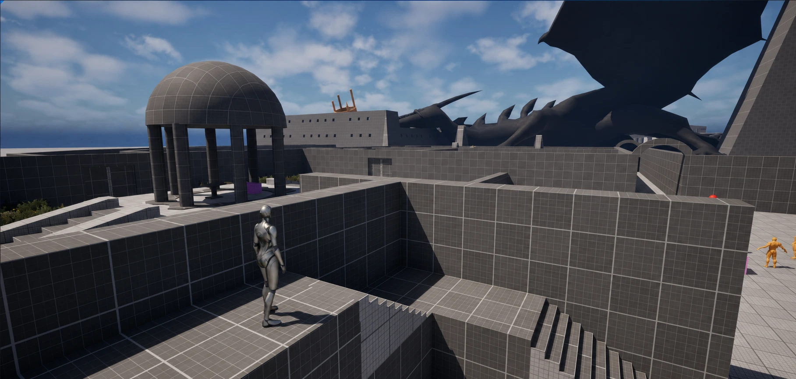
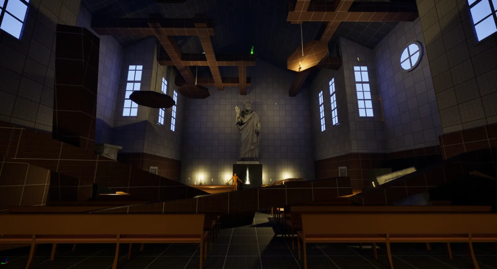

UE 5.5 / GAMEPLAY · HUD REMOVED01ORIGINAL LEVEL / MECHANICS & PUZZLES
Thunder Temple
A lightning puzzle level: learning the rules, routing power through space, and applying it in combat.
- Teaching
- Spatial puzzles
- Combat
RAY ZHENG / SELECTED PORTFOLIO
I design and build playable levels in Unreal Engine, with a focus on teaching mechanics, spatial flow, and combat pacing.
Explore work ↓
UE 5.5 / GAMEPLAY · HUD REMOVED01ORIGINAL LEVEL / MECHANICS & PUZZLES
A lightning puzzle level: learning the rules, routing power through space, and applying it in combat.

02ORIGINAL LEVEL / UE 5.5
Layered church routes, vertical crossings, and shortcuts that make returning through a space rewarding.
 03
03LEVEL ANALYSIS / KCD II
Breaking down a timed castle infiltration through access, spatial zoning, and route tradeoffs.
 04
04DATA STUDY / ELDEN RING
Using public data to investigate how exploration and preparation shape progression through difficult games.
I’m an NYU undergraduate bringing an analytical background to level design. I build whiteboxes and gameplay Blueprints in Unreal Engine, and study shipped levels to understand the relationship between space, rules, and player decisions.
CONTACT